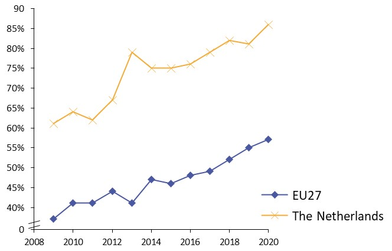
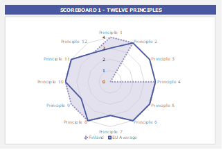
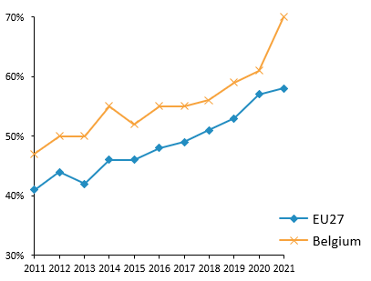
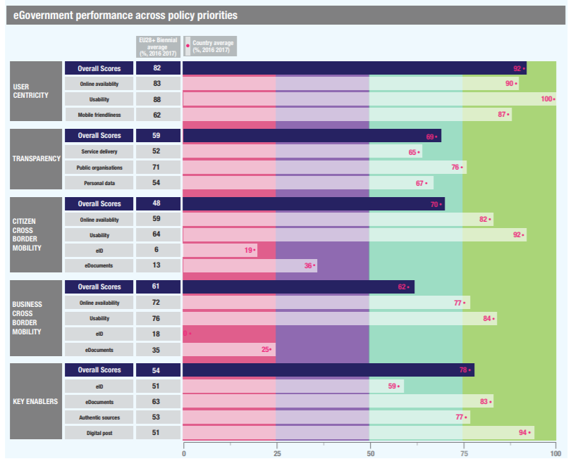
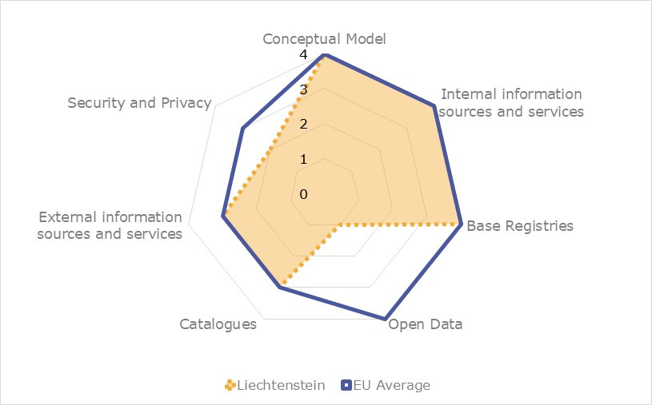
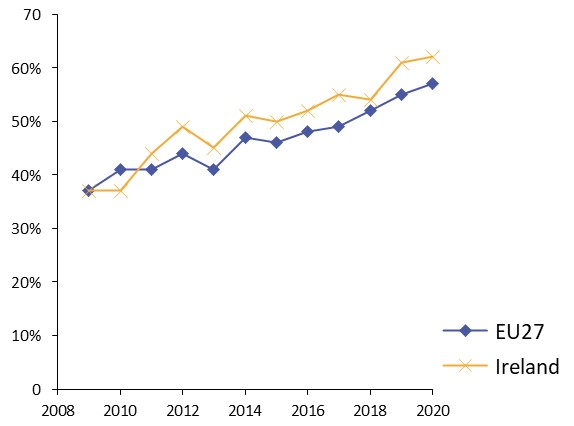

ISA2

Digital Government Factsheet 2019
The Netherlands
ISA2
Table of Contents
Country Profile 3
Digital Government Highlights 6
Digital Government Political Communications 7
Digital Government Legislation 11
Digital Government Governance 14
Digital Government Infrastructure 18
Digital Government Services for Citizens 26
Digital Government Services for Businesses 35
Country Profile
Basic data
Population: 17 181 084 inhabitants (2018)
GDP at market prices: 773 373 million Euros (2018)
GDP per inhabitant in PPS (Purchasing Power Standard EU 28=100): 128 (2017)
GDP growth rate: 2.5% (2018)
Inflation rate: 1.6% (2018)
Unemployment rate: 3.8% (2018)
General government gross debt (Percentage of GDP): 57% (2017)
General government deficit/surplus (Percentage of GDP): 1.2% (2017)
Area: 41 542 km²
Capital city: Amsterdam
Official EU language: Dutch
Currency: Euro
Source: Eurostat (last update: 15 March 2019)
Digital Government Indicators
The following graphs present data for the latest eGovernment Indicators for the Netherlands compared to the EU average. Statistical indicators in this section reflect those of Eurostat at the time the Edition is being prepared.
Digital Government State of Play
The graph below is the result of the latest eGovernment Benchmark report, which monitors the development of eGovernment in Europe, based on specific indicators. These indicators are clustered within four main top-level benchmarks:
User Centricity – indicates to what extent (information about) a service is provided online and how this is perceived.
Transparency – indicates to what extent governments are transparent regarding: i) their own responsibilities and performance, ii) the process of service delivery and iii) personal data involved.
Cross-Border Mobility – indicates to what extent EU citizens and businesses can use online services in another country.
Key Enablers – indicates the extent to which five technical pre-conditions are available online. There are: Identification (eID), Electronic documents (eDocuments), Authoritative Sources, and Digital Post. Digital Post refers to the possibility that governments communicate electronically-only with citizens or entrepreneurs through e.g. personal mailboxes or other digital mail solutions.
These top-level benchmarks are measured using a life-events (e.g. mystery shopping) approach. Eight life events are included in the overall eGovernment performance score. Four of these life events were measured in 2013, 2015 and 2017 and the other four were measured in 2012, 2014, 2016, and again in 2018. The life events measured in 2017 were Regular business operations, Moving, Owning and driving a car and Starting a small claims procedure. The life events measured in 2018 are Business start-up, Losing and finding a job, Family life and Studying.

Source: eGovernment Benchmark Report 2018 Country Factsheet
Digital Government Highlights
Digital Government Political Communications
The new Digital Government Agenda (NL DIGIBETER) was published in July 2018 on behalf of the Cabinet by State Secretary of the Interior and Kingdom Relations. The digital government agenda is connected to the broader Dutch Digitalisation Strategy.
The value driven digital government agenda is aimed at making optimal use of digitalisation, and at the same safeguarding public values, like autonomy of the individual citizen, and promoting inclusion.
The digital government agenda focuses on:
Investing in innovation;
Protecting fundamental rights and public values;
Being accessible, understandable and intended for everyone;
Making public services more personal.
Digital Government Legislation
The Digital Government Law (wet Digitale Overheid) was sent for adoption to Parliament in June 2018. The proposed law has as objective to ensure a safe login for the Dutch citizens and businesses to the (semi) government entities. The law also arranges the competence to appoint mandatory standards.
Digital Government Governance
Political responsibility for digital government in the Netherlands lies with the State Secretary for the Interior and Kingdom Relations. Sectorial ministers are responsible for ICT in their domains.
Digital Government Infrastructure
In preparation of a National API strategy several activities were started: a national API alliance was formed which drafted a National API strategy (currently in consultation), and an API platform is developed.
Digital Government Services for Citizens and Businesses
There were no new services created during the reporting year for the Netherlands.
Digital Government Political Communications
Specific political communications on digital government
NL Digibeter: Digital Government Agenda
The new Digital Government Agenda was published in July 2018. State Secretary Raymond Knops is responsible for its implementation. The digital government agenda was connected to the broader Dutch Digitalisation Strategy. The digital government agenda is drawn up in close co-operation with other levels of government and key public and private partners. It also tied with the Tallinn declaration on eGovernment,
The agenda was aimed at making optimal use of the opportunities that digitalisation offers, and at the same safeguarding public values, like autonomy of the individual citizen, and promoting inclusion.
The Digital Government Agenda focused on:
- Investing in innovation
- Protecting fundamental rights and public values
- Being accessible, understandable and intended for everyone
- Making public services more personal
- Being ready for the future
Important milestones included:
- Publication of the letter to parliament concerning measures to improve information security in the public sector. A follow up, the Baseline Information Security Government (BIO), becomes effective from 1 January 2020. The BIO replaces existing information security baselines for municipalities, central government, water authorities and provinces. It creates a common framework of standards for information security within the entire government, based on internationally recognized and current ISO standards;
- Publication of the inclusion letter in December 2018, with a focus on making services easier for everyone, helping people to go digital, explaining to people what happens when we go digital, and cooperation with other organisations. The letter was written in non-official and accessible language;
- Publication of the data agenda NL digitaal in March 2019. The agenda is about the flow of data in society and is aimed at optimal and responsible use of data in public administrations. The agenda aims at data driven approaches for solving societal issues, consideration of public values, improving quality of data and efficient reuse thereof, sharing knowledge about data driven working, investing in people, organization and change of culture.
The Dutch Digitalisation Strategy
The Dutch Digitalisation Strategy, published in June 2018, was a Cabinet-wide strategy that considered every aspect of digitalisation. The digitalisation strategy aims at:
- Leveraging social and economic benefits, with attention for healthcare, mobility, energy and the agri-food sector, and the digitalisation of public administration;
- Strengthening the foundation for digitalisation – with attention for research and development, changes in work, new skills and lifelong learning, a fair digital and data driven economy with a world class infrastructure, strengthening the resilience of citizens and organisations, and fundamental rights and ethics in the digital age.
iStrategy
In February 2019, the Minister for Interior sent the Strategic I agenda 2019-2021 to Parliament. This Strategic I agenda is aimed at the central government. The ambition is to be at the forefront and to seize opportunities in which everyone participates. Cooperation within the Central Government Agency is of great importance. The agenda covers information and data, ICT, knowledge and skills, and governance.
Key enablers
Access to public information
Open Government Vision and Action Plan
Closely interlinked with the 2017 Digital ambitions, the Open Government Vision and Action Plan were presented to the Parliament on 1 September 2013. The vision paper described different developments around the theme of open government and underlined the importance of more openness from an economic, democratic and societal perspective. Three main themes were addressed in the vision paper: more transparency around government activities, government’s responsiveness to initiatives from society, and government’s accountability. The main principle was an active disclosure of information.
The third action plan for Open Government 2018-2020 is an integrated part of the Democratie in Actie (Democracy in Action) partnership programme of the Dutch Ministry of the Interior and Kingdom Relations (BZK), the Association of Netherlands Municipalities (VNG) and the professional associations and lobby organisations of local government. It has three priority areas:
- Open decision-making at the municipal and provincial level;
- Strengthening the transparency of political party funding as part of decentralised governance;
- Pioneering Network for an Open Government for Municipalities.
National Data Agenda
The new government’s data agenda NL digitaal was published in March 2019. The agenda is about the flow of data in society and is aimed at optimal and responsible use of data in public administrations. The agenda aims at data driven approaches for solving societal issues, consideration of public values, improving quality of data and efficient reuse thereof, sharing knowledge about data driven working, investing in people, organization and change of culture
eID and Trust Services
eID Progress
Twice a year the State Secretary of the Interior and Kingdom Relations informs Parliament about the progress on the eID program. The purpose of the program is to enable user-friendly, safe and reliable digital interaction of citizens and business with the government.
Security aspects related to digital government
National Cyber Security Agenda
In connection to the digitalisations strategy there is the National Cyber Security Agenda, sent to Parliament by the Minister of Justice and Security in April 2018. The objective of the National Cyber Security Agenda is to tackle increasing threats and vulnerabilities in the digital domain. This is done by setting out the next step required in cybersecurity. The NCSA comprises seven ambitions that contribute towards the following objectives:
The Netherlands is capable of capitalising on the economic and social opportunities of digitalisation in a secure way and of protecting national security in the digital domain;
The Netherlands has adequate digital capabilities to detect, mitigate and respond decisively to cyber threats;
Netherlands contributes to international peace and security in the digital domain;
The Netherlands is at the forefront of digitally secure hardware and software;
The Netherlands has resilient digital processes and a robust infrastructure;
The Netherlands has successful barriers against cybercrime;
The Netherlands leads the way in the field of cybersecurity knowledge development;
The Netherlands has an integrated and strong public-private approach to cybersecurity.
Baseline Information Security Government
In October 2018 the State Secretary of the Interior and Kingdom Relations sent a letter to parliament concerning measures to improve information security in the public sector. As a follow up, the Baseline Information Security Government (BIO) will be effective from 1 January 2020.
Interconnection of base registries
Base Register Subsoil
In October 2018, the Minister of the Interior and Kingdom Relations informed Parliament about the progress of the final base register, the Base Register Subsoil (BRO).
The Court of Audit investigated the operation of the system of base registries and issued advice to the Minister of the Interior and Kingdom Relations (to be published June 2019).
eProcurement
No political communication was adopted in this field to date.
Domain-specific political communications
Approach to digitalisation in the judiciary
The Ministry of Justice and Security published the approach for digitalisation in the criminal justice domain. This approach addressed the need for improving information through digitalisation of procedural documents throughout the entire criminal justice chain, both for internal use and for exchange with third parties.
Digital Agenda for Primary and Secondary education
The Ministry of Education published the digital agenda for primary and secondary education. The agenda was aimed at strengthening innovative capacity of schools and teachers, digital literacy of pupils and teachers, innovative educational resources, infrastructure and ethics/public values.
Interoperability
No political communication was adopted in this field to date.
Emerging technologies
Impact of technology study
In March 2018 Minister of the Interior and Kingdom Relations sent Parliament a letter with the cabinet response to the Rathenau Institute's reports, Upgrading - Guaranteeing Public Values in the Digital Society, and, Human Rights in the Robot Age. In both reports, the Rathenau Instituut provided the cabinet with recommendations on how to deal with the impact of technology on important public values - in particular human rights - in our society.
Digital Government Legislation
Specific legislation on digital government
Digital Government Law
The Digital Government Law (wet Digitale Overheid) was sent for adoption to Parliament in June 2018. The proposed law had as its objective to ensure a safe login for Dutch citizens and businesses to (semi) government entities. The law also set minimum mandatory standards.
Administrative law
Legislation on administrative law contains general rules for the relationship between the government and individual citizens, companies and the like. The 2004 modification of the law arranged the electronic administrative traffic (mod. 2004). Currently, further modification is planned to establish the right for digital interaction with government.
Electronic Announcement Act
The Electronic Announcement Act established the obligation for national governments official publications to be published on the internet rather than on paper (in official journals, local papers etc.). An amendment of the act was foreseen in 2019 to arrange the obligation for administrative bodies (including local and regional governments) to publish in digital official journals such as local and provincial magazines, and also to arrange a digital facility which allows everyone to receive messages via e-mail that relate to their home address.
Key enablers
Access to public information
Government Information (Public Access) Act
Freedom of information legislation was first adopted in the Netherlands in 1978. It was replaced by the Act of 31 October 1991 on public access to Government information. Under the 1991 Act, any person can request information related to an administrative matter if it is contained in documents held by the public authorities or companies carrying out work on behalf of a public authority. A revision of the act was expected in 2019.
Re-use of Public Sector Information (PSI)
The Directive on the re-use of public sector information (Directive 2003/98/EC, known as the 'PSI Directive') entered into force on 31 December 2003. It was revised by Directive 2013/37/EU which entered into force on 17 July 2013. On 24 June 2015, the Re-use of Public Sector Information Act was published. The act ensures the transposition in Dutch law of the European Directive 2013/37/EU. More information is available at overheid.nl. Currently a revision of the European directive is in the final stage of decision-making. The revision will be transposed in national law.
eID and Trust Services
The Electronic Signature Act
The Regulation on electronic identification and trust services for electronic transactions in the internal market (EU Regulation 910/2014) entered into force on 1 July 2016 and sets standards for electronic identification and trust services for electronic transactions in the Single Market. The national eIDAS Implementation Act has been applicable since February 2017. The act implements parts of the eIDAS Regulation, by means of changes in existing Dutch laws such as the Telecommunications Law, Civil Law and General Administrative Law. The eID part will be transposed in the Digital Government law.
Security aspects related to digital government
Digital Government Law
The proposed Digital Government Law (wet Digitale Overheid) has as its objective the assurance of a safe login for Dutch citizens and businesses to (semi) government entities. The law will regulate mandatory minimal standards for Internet security.
General Data Protection Regulation
The General Data Protection Regulation (EU) 2016/679 was made applicable since 25 May 2018. It ensured that the same privacy rules applied throughout the European Union. In the Netherlands, the GDPR was enacted into law.
Interconnection of base registries
The Base Registry Persons and the BRP law
The system of base registries consists of 10 registries and services for data exchange. Each base registry is arranged by a specific law, following 12 agreed common requirements agreed to in 2003.
One of the base registries is the Base Registry Persons and the BRP law. Applicable since 2015, it set the following objectives: 1) Promote efficient provision of personal data; 2) Modernise the registry; 3) Manage the corresponding legal protection and privacy of individuals. It described how the registration would organised and who would be responsible for management of the data and central facilities. Additionally, the legislation described what specific information personal records must include and the registration process. This law detailed which information the registry can provide.
The Trade Registry Act
Another important base register is the Trade Registry, the registry for companies and legal persons. It is arranged by the Trade Registry Act. This act describes the fundamentals for the creation of the Business Registry (for instance, to promote legal certainty in trade), who is in charge of the registry (the Chamber), and what kind of companies are registered. It details the information about a company, the person to whom the company belongs, legal persons, and other data, which the registry contains. The Act also includes articles regarding the provision and the use of data (the use by administrative bodies, one-time data provision, etc.), the change of data already entered in the registry (this part) and regarding the quality of data (controls to ensure the availability, performance, security, accuracy and completeness of the data).
Unique Identifying Numbers Law
The Unique Identifying Numbers Law introduces a unique personal number in order to increase the efficiency of the administration and to improve the services to citizens. To achieve this, the legislation includes information about the management, creation and assignation of the numbers.
eProcurement
Procurement Act
From 1 April 2013, the Procurement Act 2012 applied to all procurement conducted by (semi) public organisations in the Netherlands. More information is available on overheid.nl.
eInvoicing Legislation
The EU e-Invoicing Directive 2014/55/EU was implemented in national legislation by means of a Decision which amended the Dutch Procurement Law and the Dutch Procurement Law for the Defence- and Safety Domain. The amendment of the procurement law is known as eInvoicing legislation.
Furthermore, in the Netherlands B2G eInvoicing has been mandatory since January 2017 for central government agencies. Since 18 April 2019, all government bodies were obliged to accept and process e-invoices.
Domain-specific legislation
Services Act
The Services Act (Dienstenwet) simplified the business activities for service providers in all EU Member States. It implemented the EU Services Directive which took effect on 28 December 2009, and incorporated the main rules from the EU Services Directive into Dutch law. It arranged the right for entrepreneurs to interact with government digitally for a specific set of services.
SUWI act
The SUWI act arranges mandatory digital interactions between citizens and governments in the work and income domain, in particular with the Employee Insurance Agency (UWV).
Interoperability
No legislation was adopted in this field to date.
Emerging technologies
No legislation was adopted in this field to date.
Digital Government Governance
National
Policy
Ministry of the Interior and Kingdom Relations
Political responsibility for digital government lies with the State Secretary for the Interior and Kingdom Relations. Sectorial ministers are responsible for ICT in their domains.
 | Raymond Knoops State Secretary for the Interior and Kingdom Relation Contact details: Ministry of the Interior and Kingdom Relations Turfmarkt 147, The Hague Postbus 20011, 2500 EA The Hague Tel.: +31 70 426 63 02 E-mail: info@minbzk.nl Source: https://www.government.nl/ |
| Bas den Hollander Director Information Society and Government Contact details: Ministry of the Interior and Kingdom Relations Turfmarkt 147, The Hague Postbus 20011, 2500 EA The Hague Tel.: +31 70 426 6176 E-mail: info@minbzk.nl Source: https://www.rijksoverheid.nl/ |
Coordination
OBDO
In February 2018 OBDO was installed. OBDO is an intergovernmental consultative body on digital government. It advises the state secretary about the common policy.
A programming board has the task of advising the OBDO on the desired and/or necessary further development of the Digital Government Infrastructure services managed by Logius
Implementation
Implementation of eGovernment is a shared responsibility of all government organisations. The policy to develop and manage the building blocks of information infrastructure is generally implemented by ICTU and Logius.
Government ICT Unit (ICTU)
The objective of ICTU is to support governments with the development, introduction and implementation of innovative ICT applications (mainly government wide solutions). ICTU is a non-profit organisation which executes programmes under commission (mostly commissioned by central government).
 | André Regtop Director, Government ICT Unit (ICTU) Contact details: ICTU Wilhelmina van Pruisenweg 104, The Hague Postbus 84011,2508 AA Den Haag Tel.: +31 70 7000 900 E-mail: info@ictu.nl Source: https://www.ictu.nl/ |
Government Shared Services for ICT (Logius)
Logius is an agency of the Ministry of the Interior and Kingdom Relations. It manages government-wide ICT solutions and common standards. Logius supplies products relating to access, data exchange, standardisation and information security. Examples include DigiD authentication service, Dutch government PKI, and Digi network. Logius also comprises the Secretariat of the Standardisation Forum.
| Yvonne van der Brugge-Wolring General Director Logius Contact details: Ministry of the Interior and Kingdom Relations Turfmarkt 147, The Hague Postbus 20011, 2500 EA The Hague Tel.: +31 70 888 75 10 E-mail: yvonne.vander.brugge@logius.nl Source: https://www.logius.nl/ |
Support
Forum Standaardisatie
Within the NL DIGIbeter agenda resides the Standardisation Forum which supports the Dutch government in the use, development and establishment of open standards for electronic exchange and monitors the use of open standards. The results are then sent to Parliament.
The Standardisation Forum promotes interoperability, not only within the government system itself, but also in relations between government agencies on the one hand and citizens and businesses on the other. The Standardisation Forum reports to OBDO.
Additionally, the Standardisation Forum fosters cross-border interoperability with its motto “Exchange of information does not stop at the border” together with direct references to European Multi-Stakeholder Platform on ICT, the ISA² Programme and e-SENS.
Base registry coordination
System of Base registries
The system of 10 base registries is operational. Several ministries are responsible for base registries in their domain. The ministry of the Interior and Kingdom Relations is responsible for the coherence of the system. For coordination OBDO is in place. It includes descriptions of base registries and responsible ministries.
Audit
Court of Audit
The Court of Audit has a legal mandate to carry out performance (or value-for-money) audits, which result in regular reports to Parliament on the efficiency and effectiveness of the governments' management and activities. It is independent of the government, and its tasks, powers and legal status are laid down in the Constitution and the Government Accounts Act.
Data Protection
Data Protection Authority (DPA)
The DPA supervises compliance with acts that regulate the use of personal data. As such, it oversees the compliance with and application of the Personal Data Protection Act, the Data Protection [Police Files] Act) and the BRP Law (personal records base register)
Subnational (federal, regional and local)
Policy
Municipalities
In the Netherlands there are three levels of local and regional governments. At local level there are municipalities, which are considered the closest to the people, and which offer the most services. Regional governments have less direct interactions with the people they represent.
Local governments have their own responsibilities regarding digitalisation. The majority of municipalities have implemented eGovernment policies. With the intergovernmental agreements on the national implementation agenda for Digital Government, municipalities have committed themselves to the national policies.
Coordination
Association of Netherlands Municipalities (VNG)
The Association of Netherlands Municipalities (Vereniging van Nederlandse Gemeenten, VNG) developed the Digital Agenda 2020 for municipalities. Increasing transparency, efficiency and functioning as one government are the main themes of this programme in which attention is paid to standardising (where possible) tailor-made local services. Preparatory work in the Association is done by the Services and Information Policy Subcommittee.
At the regional level, coordination is organised by the Association of the Provinces of the Netherlands and the Waterschapshuis.
Implementation
Local administrations
Digital government implementation is the responsibility of each municipality, province and water board.
Support
VNG Realisatie
VNG Realisatie is responsible for the development and management of municipal eGovernment standards. It acts as a partnerforf municipalities regarding information management.
Digital Government Infrastructure
Portals
Overheid.nl: government portal
Overheid.nl was introduced in the first eGovernment action plan of 1999. It contributed to transparency in public administration. Overheid.nl serves as the central access point for all information relating to government organisations. The portal provides information about services for persons and businesses by themes, life events and location. It provides consolidated national legislation, official publications, local and regional legislation and about internet consultations. The portal links to EU legislation, the open data portal data.overheid.nl and to the common website of the ministries, with documents and publications, news items on all domains. Overheid.nl also offers access in the form of a personalised environment. In 2018, there were a total of 38.9 million visits to the portal, a 20% increase in comparison to the previous year. In 2018, Overheid.nl was reorganised resulting in a new structure and the relocation of content for companies to a separate portal.
Ondernemersplein: business portal
Ondernemersplein is the point of contact for businesses and entrepreneurs in areas such as legislation, subsidies and permits. The information provided covers all levels of government. It is made available through various channels (websites, email, telephone and chat) and focuses on the issues and needs of the business community. In 2017, the website business.gov.nl was launched and improved to assist English speaking entrepreneurs in the Netherlands and abroad. Around 20,000 users use this English version of the ‘ondernemersplein’ portal. More than 80 ‘customer journeys’ were created last year, the content of which is being loaded on other websites, like the website of the Enterprise Agency or the Chamber of Commerce. Examples of customer journeys include starting a new business or exporting goods abroad. In 2018, the portal Ondernemersplein was reorganised to better respond to the users’ needs.
The Ministry of Interior and Kingdom Relations administers the business forum, where entrepreneurs can discuss matters of direct concern.
Cooperating Catalogues
Cooperating Catalogues is a standard to provide citizens and businesses with a one-stop-shop entry for government products and services, wherever they start searching. Cooperating Catalogues is a standard for publishing and exchanging metadata about products and services. The information form Cooperating Catalogues will be disclosed on the portals overheid.nl and ondernemersplein.nl, as well as on the websites of participating government organisations.
Mijnoverheid.nl: portal for personal services
Mijnoverheid.nl is the portal on which citizens can access personalised information and digital messages from the government, after having logged in with DigiD. As of the end of 2017, 6.9 million accounts had been activated, a twofold increase in comparison to the previous year. Mijnoverheid.nl offers the following functionalities:
- Citizens can access registries, and view their personal data registered by government, such as their address and family data, work & income data, pension data, data on their real estate, and their vehicle. Through a link to the organisation responsible for the personal records base register (BRP), citizens can also see which organisations are entitled to receive data from each base register.
- Citizens can receive messages from different government organisations in their secure message box. The Tax department is one of the key customers of this service. In 2018, a total of 82.1 million messages were sent to the message box; 9% more than in the previous year. In October 2018 the message box app was launched to enable citizens to easily read mail from the government on a smartphone or tablet.
- Citizens can follow the workflow, after having applied for services with participating municipalities. A total of 21 organisations were connected to the workflow functionality at the end of 2018.
Portal for business services
A digital environment is in development for entrepreneurs to do easier business with the government. It will offer entrepreneurs the functionalities to check how they are registered with various authorities, to get customised information, and to communicate digitally with the government. The platform will be developed with a demand-driven approach, based on the needs of entrepreneurs and tested in an online pilot environment. In the future, services should also be added, both from local and regional authorities and private parties.
Digipoort
Through Digipoort, the electronic post office for businesses, government organisations and businesses can quickly and efficiently exchange structured digital information. Every business that is connected can exchange digital information with the government.
Digipoort complies to the highest criteria for trust, availability and security. Messaging over Digipoort is secured by a government certificate. This is how the authenticity of messages is secured and that public bodies and businesses know where messages originate from and are delivered. The certificate also secures that messages cannot be altered.
Digipoort is a messaging hub which supports large messages. Standards like eDelivery are being used to make sure the message will arrive as intended.
In 2018 over 20,000 (inter)national businesses and intermediaries used Digipoort to send 184,2 million messages to 158 Dutch public bodies. Thanks to Digipoort, the administrative burdens for businesses and governments decreased significantly. Digipoort is used in a variety of environments, like finance, logistics, transport, social security, etc.
The Dutch open data portal
The open data portal provides an overview of all available datasets provided by governmental organisations in the Netherlands. The portal and registry is initiated and governed by the Dutch Ministry of the Interior and Kingdom Relations. The Netherlands Publication Office (KOOP) is responsible for site maintenance and development. Over 150 Dutch government organisations list their available data in over 12.000 datasets. The data portal is updated daily by harvesting-processes, API-updates and individual users. the DCAT standard for data exchange is used and has been extended for use in the Netherlands (DCAT-AP-NL). Version 1.1. is currently used.
The data registry is based on the CKAN software platform and Drupal 8.
Some of the data of the Dutch government is available in English, please see here for all English datasets (currently over 600).
Networks
National API Strategy
In preparation for a National API strategy several, activities were started: a national API alliance was formed which drafted a National API strategy (currently in consultation). An APIs Platform was started by Geonovum, in cooperation with the Bureau Standardization Forum, Chamber of Commerce, VNG Realization and the Land Registry. Given the development towards a digital society where many digital services must be able to work together easily, the Dutch government benefits from Knowledge Platform APIs which jointly looks at strategic and tactical issues related to the development and use of APIs outside and within the government
Diginetwerk
Diginetwerk connects (existing) physical government organisation networks to one another. This results in a single closed virtual government network. Within that network, governments are able to securely exchange data. Diginetwerk provides connectivity and increases efficiency, because one organisation requires just one connection to be able to exchange data with various government organisations.
Data Exchange
Data exchange services of the base registries system
The smart exchange of data from the system of base registries enables the government to operate more efficiently and to improve its service. Four system services support the base registers in their aim to disclose their catalogue of products and services to users in a uniform way. The system of base registers identifies the following system services: Digikoppeling, Digilevering, Digimelding, and the Stelselcatalogus.
- Digilevering distributes up-to-date and accurate key register data to key register clients in the shape of event messages, for instance relocation of a company, the birth of a person, or a change in somebody’s income. Each receiving organization is responsible for determining which data are relevant.
- Digimelding; The information stored in key registers has to be up-to-date and reliable. One of the tools used to guarantee the quality of the key registers is Digimelding (‘Diginotification’), which enables users to ‘report back’. All users of the base registers have a legal duty to report any data that they know could be wrong. Reporting back contributes to efficient operations management within the government, improves the level of service, and increases the opportunities to fight fraud.
- Digikoppeling consists of standards for interfaces and containing agreements for the exchange of messages between authorities. One Digikoppeling implementation in an IT-environment enables you to exchange messages with all authorities, and to join nearly all eOverheidbouwsstenen (e-Government Building Blocks), for instance the key registers. Governmental as well as private organisations that perform a public task can use Digikoppeling.
- Stelselcatalogus; The System Catalogue makes visible which data the base registers system contains, what they mean, and how they are interconnected. The System Catalogue is targeted to inform policy makers and legislation lawyers. The source code for Stelselcatalogus can be found as an open source software in Github through the OSSG (OpenSourceSoftwareGegevenscatalogus).
Standard Business Reporting
Standard Business Reporting (SBR) provides governments and businesses with an unequivocal, cost-effective, secure and adaptable method for the exchange of business information between organisations in a reporting chain. With Standard Business Reporting (SBR), the Dutch Government and the businesses in the Netherlands have come to an agreement regarding the way accountability information is being reported. This leads to an undisputed set of financial information.
SBR is already operational. The following organisations accept or require SBR: Tax and Customs Administration (e.g. Value Added Tax, Corporation Tax Return), Chamber of Commerce (annual reports), Central Statistical Office (production and investment statistics), and banks (annual credit reports). In 2018, a total of 42.8 million SBR messages were exchanged.
eID and Trust Services
DigiD
The eID approach is an enterprise in which public and private authentication solutions coexist. The public solution for citizens (DigiD) is reserved for G2C authentications. The policy aims at strengthening DigiD in two ways: on the one hand by introducing new certificates on ID cards and drivers licences to have a higher level of trust (high); on the other hand, by accepting under strict conditions a private authentication solution in order to promote resilience.
DigiD enables individuals to identify themselves for digital services. DigiD offers security: you know who you are dealing with. Using DigiD, the Citizen Service Number (BSN) of the person logging in is disclosed. This makes it possible to check the information already on file for that individual and offer personalized services. At this moment, logging in involves a user name and password, and in some cases a text message for extra verification. In July 2017 the DigiD App was launched.
DigiD is available at three levels:
- basic (user name and password: DigiD)
- middle (DigiD + sms-authentication or using the DigiD app), which both represent a stork QAA level 2, and
- substantial (the DigiD app upgraded with an ID verification), stork QAA level 3.
Although not mandatory by law yet, DigiD has become the main authentication system for citizens. There was a total of 13.8 million active accounts in 2018. In 2018, the platform was connected to 945 web-services provided by 647 public institutions. In 2018, more than 307 million DigiD authentications were made.
DigiD Mandate
'DigiD Authorise' enables users of a digital service to authorise someone to act on their behalf. This can come in handy if the user is not adept at using computers or digital services or wants to defer to someone who is more knowledgeable in the subject matter. A user who utilizes ‘DigiD authorise’ does not need to divulge their own DigiD to the person they authorise, and only gives the authorisation for one specific service. In 2018, there were more than 2.1 million active authorisations used.
Administrative facility BSN
The administrative facility citizen service number (Beheervoorziening burgerservicenummer, BV BSN) is in charge of generating, issuing, managing, and consulting the citizen service number (BSN). The BV BSN controls access to the identifying data in the underlying authentic registers (Municipal Key register Personal Data, or GBA in Dutch, and the Non-residents Records Database). It also controls access to the verification registers for identity documents, to verify identity at the counter.
eRecognition
eRecognition (eHerkenning) is the eIdentity Trust Framework that enables authentication for government agencies and businesses. With an eHerkenning authentication token, users can log in to online services offered by government agencies and businesses. Authentication tokens are technology neutral, therefore a range of options are available for users (e.g., SMS, OTP, certificate, user name/password). The four assurance levels by STORK are reused within eHerkenning in combination with a registry of mandates: users have to be mandated by their organisation for the tasks they are allowed to perform. At the end of 2018, a total of 0.29 million eRecognition means were issued, accepted by 403 public organisations where 5.5 million authentications were made.
PKI Overheid
Public Key Infrastructure (PKI) for the government (PKIoverheid in Dutch) facilitates reliable digital communication inside and with the Dutch government. PKIoverheid is a very high-grade, safe infrastructure, based on digital certificates. A PKIoverheid certificate is used for: website security, remote authentication, legally valid electronic signatures and encryption of electronic messages.
eProcurement
PIANOo
The government procures around EUR 73 billion worth of work, services and supplies every year. PIANOo, the Dutch Public Procurement Expertise Centre, was set up to professionalise procurement and tendering in all government departments, with a view to improving efficiency and compliance with the rules. Professional procurement can contribute to successful policy and offers value for taxpayers' money. PIANOo brings procurement and tendering experts together, pools knowledge and experience and provides advice and practical tips. The Expertise Centre also fosters dialogue between public contracting authorities and private sector companies. PIANOo works for and with a network of around 3,500 public procurement and tendering professionals. PIANOo is part of the Dutch Ministry of Economic Affairs and Climate Policy.
Tenderned
Tenderned is the online market place for public procurement in the Netherlands. Tenderned supports the entire tender procedure for all contracting (central, regional and local) authorities and suppliers. It is a key instrument in meeting the EU objectives for eProcurement and automatically publishes contract notices that exceed the EU threshold on Tenders Electronically Daily (TED). Tenderned is administered by PIANOo.
eInvoicing
NLCIUS
Development and enactment of a national derivative (substandard) of the European standard CIUS, the NLCIUS. The NLCIUS is maintained by the Standardisation Platform e-invoicing (STPE). The STPE furthermore supports and stimulates the implementation and use of the European Norm. The technical implementation of eInvoicing solutions within the Sub-central governments; provinces, municipalities and waterboards.More information on e-invoicing is available on digitaleoverheid.nl
ePayment
No particular infrastructure in this field was reported to date.
Knowledge Management
RADIO
The National Academy for Government Digitization (RADIO) offers courses and various digital learning forums for policymakers to gain more insight into and gain experience with digitisation and computerisation.
NORA
The purpose of the Netherlands Government Reference Architecture (Nederlandse Overheid Referentie Architectuur, NORA) is as a guiding and driving tool. It contains frameworks and existing agreements for the lay-out of the Dutch governmental information management system. Realising services within the scope of these frameworks and agreements ensures smooth cooperation with other services, and optimal re-use of existing solutions. All government parties have endorsed NORA. (NORA 3.0). Through NORA, their organisations know the relevant agreements needed for cooperation and improvement of their services. By adhering to the design principles and standards, IT solutions meet the cohesion and standardisation demands. NORA provides a framework for eGovernment components acknowledged by all stakeholders. Partners can use it to accelerate developments in their organisations to a common framework. For the use of mandatory and recommended open standards, NORA maintains a persistent link to the standards lists of the Standardisation Forum.
Gebruiker Centraal
Gebruiker Centraal (loosely translated: ‘User Needs First’) is a community of professionals working on digital government services. The community strives for a more user-friendly digital government. The core of the community is formed by an action team of 21 volunteers, all working in public administrations (ranging from ministries to municipalities). A team of 6 ambassadors helps promote the user’s perspective at board level.
Open Standards
The Dutch government promotes open standards to ensure interoperability and supplier independency. In the Netherlands some open standards are mandatory, on a ‘comply or explain’ basis, others are recommended. The Standardisation Forum has published a list of open standards. To ensure the use, development and establishment of open standards for electronic exchange, the Dutch government can rely on the support of the Standardisation Forum.
Cross-border platforms
eIDAS koppelpunt
The eIDAS infrastructure has been functional since since eIDAS was up and running. The Netherlands strives to connect to notified eID means within the shortest time possible in order to increase traffic. Dutch inbound traffic is rapidly increasing since many countries are able to use there eID mean in The Netherlands.
The Netherlands is currently in progress with notification of the eTD scheme, otherwise known as the eHerkenning for business solution.
Base registries
System of Base Registries
The smart exchange of data from the system of base registries enables the government to operate more efficiently and to improve its service.
From 2000 and onwards, work has been done to realise the current operational system of 10 base registries, each anchored in legislation according to 12 agreed common principles. Already in 2003, principles were agreed to the selection of base registers, and the requirements for the legislation for each base register.
The interconnection between Dutch registries has been established and the volumes of data exchange is steadily increasing. The GDI monitor visualises the number of connected users of the base registries and the amount of messages sent per year.
Furthermore, consistency between the registries is being monitored. Six base registries are partly or fully available as open data: BAG, BRV, BRK, BRT, BGT. The open geodata sets are disclosed through the PDOK platform.
Four system services, Digikoppeling, Digilevering, Digimelding, and the Stelselcatalogus - supporting the base registers are described under the heading of “data exchange.”
The systems of base registries comprise the following registers:
- Personal records base register (BRP) is the base register for personal data within the base registers system. The Dutch government uses the data recorded in the BRP. Amongst other things, these are: name, date and place of birth, address, and familial relations. Other organizations also use the BRP data, for instance pension funds and research institutions. The Municipal personal records register (GBA) and the register non-residents (RNI) together constitute the personal records base register (BRP). Responsible ministry: Ministry of the Interior and Kingdom Relations.
- Trade Register (HR) contains all businesses and legal entities. All other economic actors are also listed in this register. This guarantees legal security when doing business. All government bodies will be required to make use of this register. For instance, a municipality will have to consult the Trade Register when searching for a company’s details. Responsible ministry: Ministry of Economic Affairs and Climate Policy.
- Base register for Addresses and Buildings (BAG) contains municipal basic data of all addresses and buildings inside the municipality. The data is collected in a National Facility (Landelijke Voorziening, BAG LV). The Dutch land registration organisation Kadaster manages the BAG LV, and provides data to public offices, institutions, companies, and private citizens. Responsible ministry: Ministry of the Interior and Kingdom Relations.
- Base registers Topography (BRT), The BRT is a unique source of information for all mid- and small-scale topographic maps (scale of 1:10.000 or smaller scale maps) with which government authorities can easily exchange geographic information. It is kept by the Land Registry. Responsible ministry: Ministry of the Interior and Kingdom Relations.
- Base register large scale topography (BGT) a digital map of the Netherlands, which records buildings, roads, waterways, land, and railway lines in a uniform way. The map is accurate up to 20 centimeters and contains many details, just as you would see in reality. In short, it documents the spatial organization of our physical surroundings: trees, roads, buildings. Responsible ministry: Ministry of the Interior and Kingdom Relations.
- Base register Cadastral Records (BRK) consists of the cadastral registration and the cadastral map (Kadastrale Kaart). Cadastral data is used by many clients as the foundation for their own work processes. In that sense, the Kadaster has been a base register for a long time. The Kadaster’s products remain available through MijnKadaster and the other channels. Direct links to other key registers will enable incorporation of the data of other registers into the cadastral register and products. Responsible ministry: Ministry of the Interior and Kingdom Relations.
- Base register Vehicle records (BRV) lists data of vehicles, vehicle registration documents, and persons to whom the vehicle registration document was assigned. The Netherlands Vehicle Authority (RDW, Dienst Wegverkeer) provides information from the register to authorities, citizens, and businesses. Responsible Ministry: Ministry of Infrastructure and Water Management
- Base register Income (BRI) contains the total income or taxable annual income of everybody who files an income tax return. Government organisations use the BRI to determine supplements, subsidies, or benefits. The income registered in the BRI is called the registered income. You can view your registered income (of the previous year) on MijnOverheid (MyGovernment). Responsible ministry: Ministry of Finance.
- Base register Property Valuation (WOZ) consists of several data, needed to relate this value both to an immovable property and to a stakeholder. These are: “Established value” (WOZ value), a BAG-listed address, and a link to cadastral parcels and/or addresses, and to BAG dwellings, stations, berths, and/or objects. Responsible ministry: Ministry of Finance.
- Base register subsoil (BRO) contains all public data on the Dutch subsoil. The BRO Act, which came into effect on 1 January 2018, requires that source data owners provide and use soil and underground data in a digital form. The requirements will be expanded step by step in the next 4 years. The data in this key register have been validated and are of importance for activities like fresh water procurement, underground transport, and mineral mining, but also for activities on the surface, like energy transition, housing construction, and infrastructural projects. Responsible ministry: Ministry of the Interior and Kingdom Relations.
The policy administration (formerly the base register BLAU about wages, benefits and of all insured people in the Netherlands) has been appointed a sector registration. A description of the data from the Policy Administration is available as Linked Open Data in the System Catalogue.
Digital Government Services for Citizens
The information in this section presents an overview of the basic public services provided to the citizens. These were identified taking inspiration from Your Europe, a website which aims to help citizens do things in other European countries – avoiding unnecessary inconvenience and red tape in regard to moving, living, studying, working, shopping or simply travelling abroad. However, the categories used in this factsheet aim to collect a broader range of information, focusing therefore not only on cross-border services, but also on national services.
The groups of services for citizens are as follows:
Travel
Work and retirement
Vehicles
Residence formalities
Education and youth
Health
Family
Consumers
Travel
Documents you need to travel in Europe |
Passport |
Responsibility: | Central Government (delivery by municipalities) |
Website: | https://www.rijksoverheid.nl/onderwerpen/paspoort-en-identiteitskaart |
Description: | Citizens are required to apply for a passport at a local municipality. Information on the procedure is available on most municipal websites. Citizens have to personally visit a municipality office to obtain their passports and cannot apply online. In most municipalities the appointment can be booked online. In a few municipalities the document can be delivered. |
Reporting a missing travel document |
Responsibility: | Central Government (delivery by municipalities) |
Website: | https://www.rijksoverheid.nl/ |
Description: | Citizens who have misplaced or lost a travel document, such as their passport or ID card can now fill in a form online and report the lost document. |
Work and retirement
Working abroad, finding a job abroad, retiring |
Job search services by labour offices |
Responsibility: | Central Government, Employee Insurance Agency (UWV) |
Website: | https://www.werk.nl/ |
Description: | All job seekers can make use of the UWV e-services via the website werk.nl. Registration and benefit applications take place digitally; clients create a CV and personal Work folder online. In the Work folder they can easily keep track of their job applications and have access to thousands of vacancies and can communicate online with an employment adviser. |
Professional qualifications |
Information on regulated professions |
Responsibility: | Central Government and Nuffic |
Website: | https://www.nuffic.nl/en/subjects/your-foreign-diploma-in-the-netherlands/#working-in-the-netherlands-with-a-foreign-diploma |
Description: | The website of the Ministry of Social Affairs included information on the regulated professions and professional qualifications. NGO Nuffic serves as the assistance centre (AC) in the Netherlands. Nuffic issues AC- declarations for Dutch citizens. These can be applied online. |
Taxes, unemployment & benefits |
Unemployment benefits |
Responsibility: | Central Government, Employee Insurance Agency (UWV) |
Website: | https://www.werk.nl/ |
Description: | All job seekers can make use of the UWV eServices via the website werk.nl. Registration and benefit applications take place digitally; Citizens do not apply for unemployment benefits independently; they are required to first register as job seeker. They need to login with DigiD. |
Base registries: | Unemployment benefits are an example of services related to common life events that will result in interaction with Dutch base registries. |
Income tax: declaration, notification of assessment |
Responsibility: | Central Government, Tax Administration |
Website: | http://www.belastingdienst.nl/ |
Description: | Online tax declaration, highly automated processing of returns. A user can get access to prefilled digital forms with DigiD, check the data and sign. The tax administration has also developed an app for simple returns. Messages will be delivered in the message box. |
Vehicles
Driving licence |
Driver’s licence |
Responsibility: | Central Government, RDW (delivery by Municipalities) |
Website: | http://www.rijbewijs.nl/ |
Description: | Citizens are required to visit their municipality office in person to obtain a driving licence after passing the required tests and obtaining the necessary certificates. Information on the procedure is provided on most municipality websites. In most municipalities the appointment can be booked online. Citizens get a notification when the driving licence expires. |
Registration |
Car registration (new, used, imported cars) |
Responsibility: | Central Government, RDW |
Website: | http://www.rdw.nl/ |
Description: | Information only. Car dealers can be seen as a one-stop shop. Most dealers have electronic access to RDW using tailor-made software and a Public Key Infrastructure (PKI) solution using certificates linked to an existing register of certified garage companies. Real-time checks are made with the Central Drivers Licenses Register (also maintained by the RDW) for verification purposes. Individuals buying cars from third parties require registration via a post office. An online service for registration is available. |
Residence formalities
Documents and formalities |
Announcement of moving (change of address) |
Responsibility: | Central Government (service delivery by municipalities) |
Website: | https://www.rijksoverheid.nl/onderwerpen/gemeenten/vraag-en-antwoord/hoe-kan-ik-mijn-verhuizing-doorgeven-aan-de-gemeente https://www.overheid.nl |
Description: | Dutch citizens are obliged to report changes of their personal data (including home address) to their local authority, which manages the data in the base registry of persons (BRP). The change of address is automatically reported to other public organisations. The majority of municipalities provide information and forms to download on their websites and an increasing number of municipalities have online notification applications (mainly for intra municipal movements). DigiD is used for authentication. The portal overheid.nl provides links to the websites of the responsible municipal bodies and does not provide the eService itself. |
Certificates (birth, marriage): request and delivery |
Responsibility: | Central Government (service delivery by municipalities) |
Website: | https://www.rijksoverheid.nl/onderwerpen/gemeenten/vraag-en-antwoord/uittreksel-burgerlijke-stand-aanvragen http://www.overheid.nl/ |
Description: | Civil certificate requests are handled by the local authorities. Most provide information and forms to download and many offer online applications via DigiD. The policy is also to reduce the number of times requests are made. The portal provides links to the websites of the responsible municipal bodies but does not provide this eService itself. |
Turning 18 years old |
Responsibility: | Central Government |
Website: | https://www.rijksoverheid.nl/onderwerpen/achttien-jaar-worden/ |
Description: | On the website it is possible to find all relevant information for individuals turning 18 years old, including information related to health care allowance, driving licence, voting for elections, requesting the DigiD. A personal checklist can also be filled in. |
Separation or divorce |
Responsibility: | Central Government |
Website: | https://www.rijksoverheid.nl/onderwerpen/scheiden |
Description: | The webpage provides information in case of separation or divorce, giving also the opportunity to fill in a personal checklist to better meet the persons’ needs. |
Declaring a deceased person |
Responsibility: | Local Government |
Website: | http://www.overheid.nl http://www.ondernemersplein.nl/regel/aangifte-akte-overlijden/ |
Description: | The local authorities must be informed when someone dies. Relatives can do it themselves or leave it to their funeral undertaker. The undertaker can register a person decease’ online and also check the relevant procedures and regulations in their municipality. The portal provides links to the websites of the responsible municipal bodies but does not provide this eService itself. |
Certificate of good conduct |
Responsibility: | Central Government, Justis |
Website: | https://www.justis.nl/producten/vog/certificate-of-conduct/ |
Description: | A certificate of conduct (Verklaring Omtrent het Gedrag, VOG) is a document which declares that the applicant did not commit any criminal offences relevant to the performance of his or her duties. The declaration can be applied for online at Justis, once the requesting organisation has done their preparations. |
Declaration to the police (e.g. in case of theft) |
Responsibility: | Central Government, regional Police branches |
Website: | http://www.politie.nl/ |
Description: | Electronic notification of certain 'smaller' crimes possible. |
Passport |
Responsibility: | Central Government, (delivery by Municipalities) |
Website: | https://www.rijksoverheid.nl/onderwerpen/paspoort-en-identiteitskaart |
Description: | Citizens are required to apply for a passport at a local municipality. Information on the procedure is available on most municipal websites. Citizens have to personally visit a municipality office to obtain their passports and cannot apply online. In most municipalities the appointment can be booked online. |
Checking the real estate value |
Responsibility: | Central government and local governments |
Website: | https://www.wozwaardeloket.nl/ |
Description: | This real-property value box allows citizens to view the real-property value of homes. The WOZ value box is designed for individual consultation of particular dwellings. The central government provides tools, municipalities the WOZ data. |
Education and youth
School, university |
Public libraries (availability of catalogues, search tools) |
Responsibility: | Netherlands Association of Public Libraries (VOB) |
Website: | http://www.bibliotheek.nl/ |
Description: | Online catalogue of public libraries across the country. Online requests are possible in some cases. |
Enrolment in higher education/university |
Responsibility: | Studielink (cooperation between higher education, ministry and DUO) |
Website: | https://app.studielink.nl/front-office/ |
Description: | Online catalogue of public libraries across the country. Online requests are possible in some cases. |
Public libraries (availability of catalogues, search tools) |
Responsibility: | Central Government, DUO |
Website: | http://www.duo.nl/ |
Description: | DUO is commissioned by the Ministry of Education, Culture and Science for administering student loans. Students can manage their own information and communicate changes in study and/or personal circumstances online. Monthly loan payments are an integrated service. |
Research |
Funding support |
Responsibility: | Central Government, Enterprise Agency |
Website: | http://www.rvo.nl/subsidies-regelingen |
Description: | Netherlands Enterprise Agency (RVO.nl) encourages entrepreneurs in sustainable, agrarian, innovative and international business. RVO publishes information for entrepreneurs in different branches including researchers on available funding opportunities from various ministries and the European union. Subsidies and permits managed by RVO can often be applied for online. |
Information and assistance to researchers |
Responsibility: | Central Government, Enterprise Agency |
Website: | http://www.euraxess.nl/ |
Description: | EURAXESS Netherlands provides information and assistance to mobile researchers – by means of the web portal and with the support of the national EURAXESS Service Centres. The portal contains practical information concerning professional and daily life, as well as information on job and funding opportunities. |
Public libraries (availability of catalogues, search tools) |
Responsibility: | Netherlands Association of Public Libraries (VOB) |
Website: | http://www.bibliotheek.nl/ |
Description: | Online catalogue of public libraries across the country. Online requests are possible in some cases. |
Health
Planned medical treatment abroad and unplanned healthcare |
Disabilities, chronic diseases and elderly |
Responsibility: | Central Government |
Website: | http://www.rvo.nl/subsidies-regelingen |
Description: | Information on important care and social security provisions for people with disabilities, chronic illnesses and the elderly is provided by the special website. |
Medical costs (reimbursement or direct settlement) |
Responsibility: | Central Government, health insurance companies |
Website: | http://www.rijksoverheid.nl/onderwerpen/zorgverzekering |
Description: | Information purposes only. Citizens are insured by private health insurance companies. |
When living abroad |
Healthcare abroad |
Responsibility: | Central Government, CAK and National Health Care Institute (Zorginstituut Nederland) |
Website: | http://www.cbhc.nl/nl-nl/; https://www.zorginstituutnederland.nl/Verzekerde+zorg/z/zorg-en-buitenland-zvw |
Description: | In the Netherlands the CAK implements tasks for the National Contact Point (NCP) for cross-border healthcare. CAK has been commissioned to do this by the Ministry of Health, Welfare and Sport (VWS). CAK provides general information for patients who want to undergo medical treatment in another EU-country. On our website you will find information about what you have to do in such cases and how you can obtain reimbursement of such treatment. |
Family
Children and couples |
Child allowances |
Responsibility: | Central Government, Social Insurance Bank (SVB) |
Website: | http://www.svb.nl/ |
Description: | The child benefit is payable up to 18 years of age. The child allowance process starts the moment the authorities (via the municipality) are notified of a child’s birth (which must currently be done in person). Municipalities electronically notify (SVB). SVB will contact 2 - 4 weeks after the registration of the child's birth. Citizens can then claim child benefit online via My SVB, using DigiD as login and fill in the claim form. If further children are born, the child benefit will be entitled automatically. |
Certificates (birth, marriage): request and delivery |
Responsibility: | Local Government |
Website: | http://www.overheid.nl/ |
Description: | Civil certificate requests are handled by the local authorities. Most provide information and forms to download and many offer online applications via DigiD. The policy is also to reduce the occasions for which they are requested. The aforementioned portal provides links to the websites of the responsible municipal bodies and does not provide this eService itself. |
Base registries: | Certificates (birth, marriage): their request and delivery an example of how services related to common life events result in interaction with Dutch base registries. |
Consumers
Shopping |
Consumer protection |
Responsibility: | Central Government |
Website: | https://www.rijksoverheid.nl/onderwerpen/bescherming-van-consumenten |
Description: | The portal gives information on what consumers’ rights are, who one can complain to, what regulations are in place, etc. Regulators such as the Authority for Consumers and Markets, ensure that companies adhere to the rules. |
Consumer protection |
Responsibility: | Central Government, Juridisch loket |
Website: | https://www.eccnederland.nl/nl |
Description: | The European Consumer Centre belongs to the European Consumer Centre Network-ECC Net, founded by the European Commission in 28 Member States in collaboration with National Governments. It informs consumers on their rights and assisting them in their cross-border consumption issues, promoting and supporting out of court disputes resolution more quickly and at lower cost than the Court claim procedures. |
Digital Government Services for Businesses
The information in this section presents an overview of the basic public services provided to the Businesses. These were identified taking inspiration from Your Europe, a website which aims to help citizens do things in other European countries – avoiding unnecessary inconvenience and red tape in regard to moving, living, studying, working, shopping or simply travelling abroad. However, the categories used in this factsheet aim to collect a broader range of information, focusing therefore not only on cross-border services, but also on national services.
The groups of services for businesses are as follows:
Running a business
Taxation
Selling in the EU
Human Resources
Product requirements
Finance and funding
Dealing with customers
Running a business
Start-Ups |
Registration of a new company |
Responsibility: | Central Government, Chambers of Commerce |
Website: | http://www.kvk.nl/ |
Description: | Information and forms to download. Forms then have to be printed out, filled in, signed and returned to the Chamber of Commerce by post. |
Base registries: | Registration of a new company is an example of how services related to common life events result in interaction with Dutch base registries. |
Business portal II |
Responsibility: | Central Government |
Website: | http://www.ondernemersplein.nl/ (NL) |
Description: | Ondernemersplein is the point of contact for businesses and entrepreneurs in areas such as legislation, subsidies and permits. The information provided covers all levels of government. It is made available through various channels (websites, email, telephone and chat) and focuses on the issues and needs of the business community. |
Business forum |
Responsibility: | Central Government |
Website: | https://www.higherlevel.nl/ |
Description: | The Ministry of Interior and Kingdom Relations administers the business forum, where entrepreneurs can discuss matters of direct concern. |
Intellectual Property |
Patents |
Responsibility: | Central Government, Netherlands Enterprise Agency (RVO) |
Website: | http://mijnoctrooi.rvo.nl/bpp-portal/home |
Description: | The Benelux Patent Platform is a large-scale project implemented for the Benelux countries (Belgium, the Netherlands and Luxembourg) in the field of patents. It constitutes a set of IT applications and infrastructure for supporting the establishment, processing and tracking of each of the key patent elements throughout all the stages of the patent life-cycle. |
Taxation
VAT |
VAT: declaration, notification |
Responsibility: | Central Government, Tax Agency |
Website: | http://www.belastingdienst.nl/ |
Description: | Entrepreneurs are obliged to file their VAT returns digitally. This can be done via website of the tax agency or via software. As from 1 January 2014 VAT returns filing may solely via Standard Business Reporting (SBR) |
Excise duties |
Corporate tax: declaration, notification |
Responsibility: | Central Government, Tax Agency |
Website: | http://www.belastingdienst.nl/ |
Description: | Entrepreneurs have the obligation to file corporate income tax declarations digitally. As from the 2012 tax year software must comply with the Standard Business Reporting |
Customs declarations (e-Customs) |
Responsibility: | Central Government, Tax Administration |
Website: | http://www.belastingdienst.nl/ |
Description: | Customs declarations can be performed online. Customs will respond electronically with information on the next step (which varies according to the particular declaration). Businesses are required to first contact the Customs department to obtain software (or information on suitable software), licences and a subscription to a network service (depending upon the type of software chosen). |
Selling in the EU
Selling goods and services |
Dutch law |
Responsibility: | Central Government |
Website: | https://www.rijksoverheid.nl/onderwerpen/mededinging |
Description: | This dedicated webpage offers a comprehensive overview of the different information and sources relating to competition, offering also the possibility to search through relevant documents, such as regulations, directives and policy notes. |
Public contracts |
Public procurement / eProcurement |
Responsibility: | Central Government, PIANOo |
Website: | http://www.tenderned.nl |
Description: | Tenderned is the online market place for public procurement in the Netherlands. Tenderned supports the entire tender procedure from award to award for all contracting (central and local) authorities and suppliers. |
Human Resources
Employment contracts, social security and health, equal treatment and qualifications |
Social contributions for employees |
Responsibility: | Central Government, Tax Agency |
Website: | http://www.belastingdienst.nl/ |
Description: | Employers have to register employees and report for pay roll taxes. Employees are obliged to report digitally. Data is exchanged between the tax agency and UWV (Employees Insurance Agency) and CBS (bureau for statistics). |
Product requirements
Chemicals (REACH) |
Dutch REACH (Registration, Evaluation, Authorisation and Restriction of Chemicals, EU Regulation no 1907/2006) Helpdesk |
Responsibility: | Central Government, National Institute for Public Health and the Environment (RIVM) |
Website: | http://www.reachhelpdesk.nl/ |
Description: | The website (Dutch only) offers ample information particularly for small and medium-scale enterprises. |
EU eco-label |
Environment-related permits (incl. reporting) |
Responsibility: | Central Government/regional and local Government (depending on the type of permit required) |
Website: | http://www.omgevingsloket.nl/ |
Description: | Entrepreneurs can apply for an environment related permit at the website 'omgevingsloket'. The application will automatically be processed to the competent authority(s). For the authentication eherkenning level 2 is needed. |
Finance and funding
Getting funding |
Subsidies and financing |
Responsibility: | Central Government, Netherlands Enterprise Agency (RVO) |
Website: | http://www.rvo.nl/subsidies-regelingen |
Description: | Information on available funding opportunities from various ministries and the European union. |
Accounting |
Submission of data to statistical offices |
Responsibility: | Central Government, Statistics Netherlands (CBS) |
Website: | http://www.cbs.nl/ |
Description: | Submission of data to the statistical office can be made electronically. |
Dealing with customers
No public services were reported in this domain to date.
The Digital Government Factsheets
The factsheets present an overview of the state and progress of Digital Government European countries.
There are published on the Joinup platform, which is a joint initiative by the Directorate General for Informatics (DG DIGIT) and the Directorate General for Communications Networks, Content & Technology (DG CONNECT). This factsheet received valuable contribution from John Kootstra, Policy Officer, Ministry of Interior and Kingdom Relations, Directorate Information Society and Government, Netherlands.
The Digital Government Factsheets are prepared for the European Commission by Wavestone
An action supported by ISA²
ISA² is a EUR 131 million programme of the European Commission which develops digital solutions that enable interoperable cross-border and cross-sector public services, for the benefit of public administrations, businesses and citizens across the EU.
ISA² supports a wide range of activities and solutions, among which is the National Interoperability Framework Observatory (NIFO) action.
ISA² solutions can be used free of charge and are open source when related to IT.
Contact ISA²
isa2@ec.europa.eu
Follow us
@EU_ISA2
@Joinup_eu

isa² programme